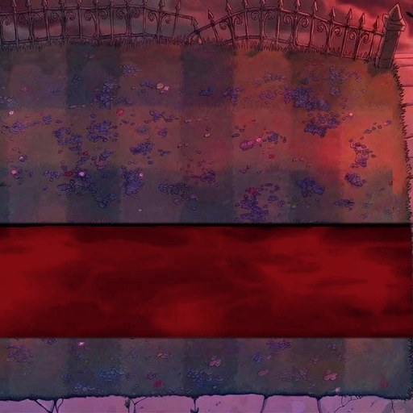
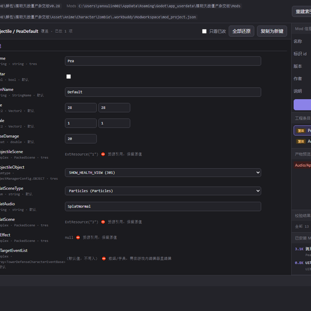
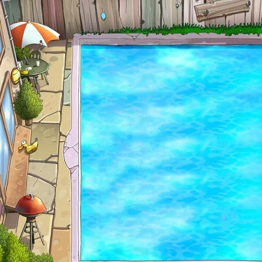

 地图夜晚水池吸血 吸血鬼屋泳池 以「吸血鬼屋」为基底继承全部特性（夜晚 / 无天降阳光 / 吸血规则 / 昼夜元素格），行数由 5 扩到 6，并把第 4~5 行 × 第 1~9 列设为血池。 卡片地图 版本v1.0.0 体积319.8 KB 查看详情 夸克网盘下载
工具关卡编辑可视化 全模式关卡构建器 图形化关卡构建器：可视化编辑全模式关卡数据、导入导出关卡配置，免手写 .tres。配套 Python 生成脚本与中文预设。 卡片工具 版本v0.28 体积工具 查看详情 联系作者获取
 工具属性编辑打包 Mod 图形编辑器 游戏外运行的图形化 Mod 编辑器：改数值、调属性、打包 .pmod，无需打开游戏即可迭代，附 pmod 规范校验。 卡片工具 版本v1.0 体积工具 查看详情 联系作者获取
 关卡泳池BOSS命运选项托管插件 潘多拉泳池 泳池自选卡关卡：初始阳光 1500，开局即出戴夫博士（0.45 倍血 144000），普通/路障/铁桶僵尸源源不断（15 波），击败博士并清空全场才算胜利。命运选项框每 25 秒弹出，选「衰老」则 45 秒内无法使用铲子。 卡片地图 版本v1.1.0 体积14.0 KB 查看详情 夸克网盘下载